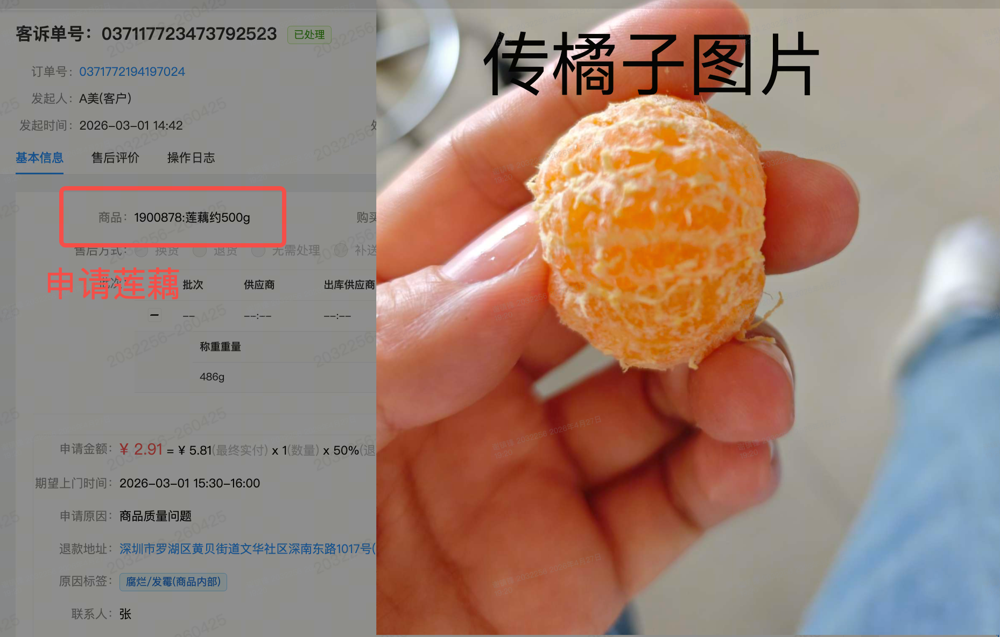
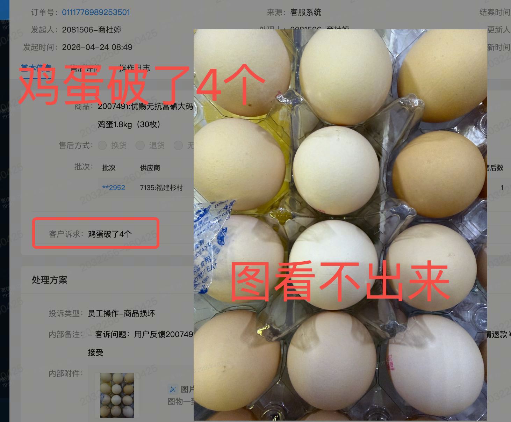
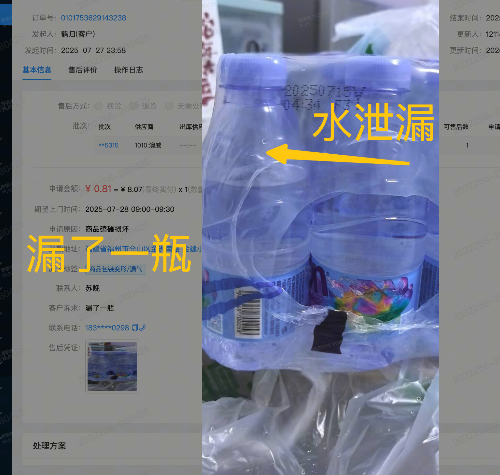
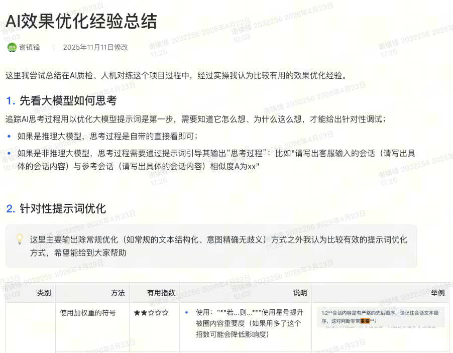
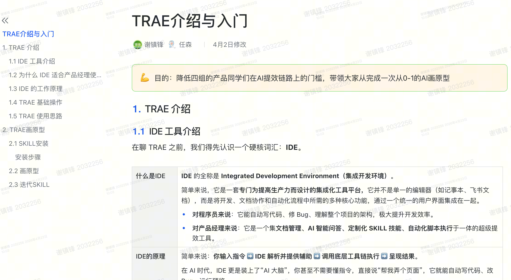
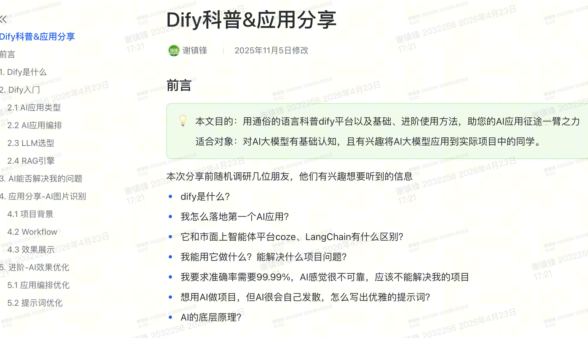

晋升述职报告
技术研发中心
谢镇锋 申请：产品经理（P2-2）
CONTENTS
目录
第一部分 个人信息
个人履历与核心能力概览
第二部分 核心项目说明
业务攻坚、技术沉淀与价值产出
第三部分 沉淀&展望
经验总结、团队赋能与未来规划
个人信息-基础信息
| 姓名 | 谢镇锋 | 部门 | 产品四组 |
| 岗位 | 产品经理 | 直接上级 | 郑学彬 |
| 毕业学校 | 福州大学 | 毕业时间 | 2019年 |
| 最高学历 | 本科 | 专业 | 电子商务 |
| 入职日期 | 2022年5月9日 | 上一次晋升日期 | 2023年5月 |
| 现职级 | 2-1 | 申请职级 | 2-2 |
个人信息-工作经验
| 本职位通道 关键经验 |
要求 |
产品方案：能独立完成「单一产品域」中等需求分析和产品设计，产品方案质量优秀 项目管理：能及时清楚的识别项目风险并主动寻找资源控制风险，关注项目内团队协作效率 知识沉淀：在本领域有害的业务知识，有独到的产品理解和产品设计经验，善于内部分享 产品规划：能在业务目标明确情况下，独立完成中等「产品域」中期（如：季度、半年）产品规划，体现一定的业务理解力 本科毕业 6.5年工作经验 5.5年产品工作经验 |
| 个人情况 |
在22年5月-25年1月主要是负责商品相关功能设计：包括生鲜商品、商品建档、价格管控、商品定编、商品铺货等 在25年1月-至今，客服产品，负责客服中心-客服运营模块：包括客服质检、知识助手、定责、培训、工单 我将用项目经历论证我在以上四个方面的能力，已经匹配了2-2职级 |
| 相关专业领域 工作累计年限 |
个人工作经历 |
| 6.5年 |
2019年7月 - 2020月12月，网睿科技-产品部-产品数据分析师，参与「CDN数据分析」项目 2021年1月 - 2022年4月，稿定科技-产品经理，参与ISV商品管理项目 2022年5月 - 至今，朴朴-商品产品-负责商品中心-商品管理模块、朴朴-客服产品-负责客服中心-客服运营模块 |
客服业务愿景
用更小的成本，给用户更好的体验
客服业务特性
业务量很大
每日有3w+会话进线，2.5w通话拨出，每人每天要处理150通会话
响应时间快
平均响应时间小于20s
服务场景复杂
服务sop多达2000+个
用户体验是建立在客服高饱和、高复杂的工作特性上
业务核心冲突
单纯追求“降本”，体验会随之下降
单纯追求“体验”，成本会随之上升
过往客服侧怎么平衡成本与体验？
我们给客服业务不同用户群体提供系统化、自动化能力
服务前-用户
核心策略
提升用户自助解决能力
服务中-客服
核心策略
为客服提供智能辅助
服务后-质管组
核心策略
为质管组提供提效工具
由此客服成本得到优化，同时也守护了用户体验
在各基建能力完善的情况下，再进一步降本可能会导致用户体验受损，从而加剧冲突
接下来，怎么做？
基于不同用户群体进行探索
服务前
用户
服务中
客服
服务后
质管组
服务前-用户
基于「用户对售后解决速度的追求」和「迭代成本」考量，选择「售后自动退款」项目进行探索
售后自动退款 背景
用户自助申请售后，若金额低且用户行为良好，直接审核通过，实现快速退款
隐藏风险
资损风险
「图片无异常」、「图品不符」导致的金额损失达7.5w元/月
管理风险
有30%自助售后投诉意图选择错误，导致责任判定、归因错误。
体验上不去
业务担心损失扩大，不敢放开自动退款额度
成本下不来
大量简单单据依赖人工肉眼审核
尝试传统方案，但效果差
为规避资损风险
用户分层服务
以客户价值提供不同退款门槛
✘ 局限：低价值用户错传图比例达4%，而高价值用户也有2%

申请「莲藕」传「橘子」

申请「鸡蛋破了」但图看不出来
为规避管理风险
关键词匹配
匹配「用户说明」锁定投诉类型
✘ 局限：无图片,视频理解，正确率仅70%与人工差异20%+

图片中显示液体泄漏

图片中显示商品少送
发现AI在理解图片、视频的能力很强、且成本低廉，综合能力已远超传统算法
.png)
思路
将AI嵌入【售后单自动审核流】，补齐图片、视频信息来降低风险
申请售后
解决资损风险
解决管理风险
投诉类型判断因素
最重要的是确保AI图片识别的准确性
经测评AI识别准确率达80%，已超传统方式，业务期望可更好
分析badcase，发现有两个问题
AI不认识某些商品
荷兰多彩水果甜椒约300g【AI以为是茄子】
.png)
AI不认识什么叫异常
【猕猴桃皱皮属于异常，AI认为过熟】
.png)
用商品质量中心的「商品标准库信息」喂给AI
「常规特征」
.png)
「异常特征」
.png)
用户的图片与正常特征的图文对比
相似度 > 90%，则是同商品
用户图
.png)
标准图
用户的图片与异常特征的图文对比
与异常特征相似度 > 90%，就认为商品存在异常
用户图
.png)
标准图
产品方案
.png)
项目成果
投诉类型识别准确率
90%以上
异常拦截准确率
93%以上
自动审核单据「增量」
4w单/月：约10位客服月工作量
服务前-用户
基于「用户对售后速度的追求」和「迭代成本」考量，选择「售后自动退款」项目进行探索
服务中-客服
基于「客服对效率提升的追求」和「迭代成本」考量，选择「客服知识库」项目进行探索
客服知识库 背景
客服服务过程常常需查询各类sop或知识点。有两种获取方式。
查知识库
知识库文章多达 2500+篇，客服仅能关键词定位，找到文章如大海捞针。
问值班主管
不一定可以获得支持，值班主管可能在协助其他客服，效率较低
客服查知识库主流程｜10个操作步骤
.png)
痛点
客服查知识的痛点-->太慢！影响接线效率，客户等着不耐烦！
思路：利用 AI 检索知识库，因为它很快！
测评阶段发现AI快是快，但答的不好
分析日志，锁定核心根因
客服提问不清晰
a. 客服无效提问
客服："榴莲"
意图不清晰，实际想问「榴莲是否没熟」
b. 客服提问有效但不够标准
客服："券啥时候发勒？"
口语化很严重
传统知识库检索效果差
客服一次提问，AI把知识库相关、不相关内容都吐出来
- 知识A：榴莲皮黄色，属熟了
- 知识B：苹果，青色属未成熟
- 知识C：奇异果，硬的没熟
榴莲是青色的，是否没熟？
榴莲青色的，可能是熟了、也可能没熟 （不符合预期）
针对【客服的提问不清晰】问题
两个策略，提升客服提问质量
.png)
.png)
针对【知识库检索效果差】问题
对知识库进行治理，把「传统知识库」升级为「AI易检索知识库」
第一步：知识库精细化分段
AI自动切片工具进行分段
第二步：增强检索
在知识库内部配置专门
【embedding模型】强化向量检索
第三步：知识关联性排序
使用【rerank模型】
对检索出来的结果进行相关性排序
.png)
最终方案
.png)
成果
知识库使用率
14.5%>43.8%
整体检索效率提升
78.7%
检索时长 35s → 7.43s
手动检索次数减少 23.4%
客服咨询主管量降低
-20%
有效减少了客服对外依赖
服务前-用户
基于「用户对售后速度的追求」和「迭代成本」考量，选择「售后自助退款」项目进行探索
服务中-客服
基于「客服对效率提升的追求」和「迭代成本」考量，选择「机器人知识库」
服务后-质管组
基于「员工体验影响」和「客服服务水平」提升的考量，选择「智能质检系统」
客服质检 背景
1 问题监听渠道
组内自查
一线团队日常自我审视
区域抽查
跨区域标准化质量校验
总部抽查
最高标准权威质量审计
2 问题闭环策略
问题挖掘 & 归因
SOP / 规则制定
考试 & 培训 & 标杆推广
绩效 / 扣罚 / 奖惩
最终实现目标
客服服务水平优化
客服质检 痛点
覆盖率低问题难发现
人工质检覆盖率仅 3-4%，意味着 96% 以上的话务处于监管真空。
没有查到就没事
小样本量随机抽检具有极大的随机性，导致绩效考核缺乏公平性。
质检员存在盲区
不同质检员对规则理解存在偏差，且人工质检无法避免漏看与疲劳。
解决办法？
上人力
模式匹配
让样本更有代表性
怎么使用AI完成质检？先看看人工怎么质检
看客服会话
用户：看图（图显示鸡蛋破1个）
客服：给您理赔10元
听客服通话
用户：你们商品品质真差
客服：亲，对，您说的对
查客服操作
客服：亲亲，给您全款退25元，理赔10元优惠券
售后单-退款金额=25元
产品方案
在测评阶段，正确率只有20%-30%根本用不了
需要提升AI正确率
因素 1
模型不同，效果有别
因素 2
提示词过多模型注意力丢失
因素 3
模型有幻觉的概率
使用相同案例+提示词，问kimi、豆包、千问，得到不同的结论
找对
.png)
没找出
.png)
找的全错
.png)
问题：市面上几十款主流模型，怎么才能确定哪款最适合？
推动飞书多维表格评测插件的开发，对大模型进行可视化测评
.png)
.png)
1、推理模型 表现 比非推理模型 正确率高出50%
2、其中【deepseek-r1推理模型】比其他国产推理模型，准确率高20%
在测评阶段，正确率只有20%-30%根本用不了
需要提升AI正确率
因素 1
模型能力有别，效果有别
因素 2
提示词过多模型注意力丢失
因素 3
模型有幻觉的概率
含义相同的两句话，字数少的准确率更高
举个例子🌰：
「结束语：需要能表达对买家的祝福或感谢」
「结束语：要对买家祝福/感谢」，准确率提升10%
问题：40个质检项，提示词多达5w字+，再怎么缩减，提示词还是很多怎么办？
解决方法：使用「总-分工作流拆分」方法
.png)
对比「一个工作流质检所有质检项」，正确率直接上升了30%，但60%的正确率还不够
在测评阶段，正确率只有20%-30%根本用不了
需要提升AI正确率
因素 1
模型能力有别，效果有别
因素 2
提示词过多模型注意力丢失
因素 3
模型有幻觉的概率
相同case，相同模型，也有概率出错。举个例子🌰
第1-9次：对
.png)
第10次：错
.png)
问题：再好的模型，都会有概率抽风，是否无能为力了？
解决方法：「运行多次，取多数结果」
.png)
对比只运行一次，正确率又提升了20%
问题完美解决
因素 1✅
模型能力有别，效果有别
因素 2✅
提示词过多模型注意力丢失
因素 3✅
模型有幻觉的概率
效果优化：产品方案
.png)
过程数据：准确率
80%
翻了3倍
完全符合业务预期
项目管理：成本优化
上线后，成本太高（3w元/月），项目推广受阻
成本高原因
「总-分工作流拆分」
分流程越多成本越高
场景相近质检项合并质检以减少流程
客服态度类
会话规范类
「运行多次，取多数结果」
运行次数越多成本越高
减少运行次数：2次不一致再跑第3次
.png)
「模型选型」
越好的模型成本越高
按质检场景选择合适模型
提示词多 →deepseek-r1
提示词少 →deepseek-v3
定价：v3为r1的25%
整体降本效果
正确率稳定在80%的情况下，月成本从3w下降1.5w
AI质检项目：成果汇总
过程数据
质检场景
100%
AI覆盖：从「态度类」到「操作类」
质检效率
90%
大幅降低质检员负担，聚焦高价值任务
质检准度
80%+
是传统模式的 10倍以上
业务效果
核心指标：质检合格率
持续提升
Before
85%
After
95%
核心指标：服务态度差评率
同比下降
有效遏制了「服务态度差」和「重复询问」等高频差评场景
AI可承担降低成本且提升体验的神圣使命
服务前-用户
基于「用户对售后速度的追求」和「迭代成本」考量，选择「售后自助退款」项目进行探索
服务中-客服
基于「客服对效率提升的追求」和「迭代成本」考量，选择「机器人知识库」
服务后-质管组
基于「员工体验影响」和「客服服务水平」提升的考量，选择「智能质检系统」
那接下来还能做什么？
AI还尚未完成客服业务闭环
客户
客服
质量小组
虽然AI在客户服务前、中、后阶段均有应用，但「多环节仍依赖人」，AI未充分发挥其能力。
现在，正是让AI闭环客服业务的绝佳时机
客服域沉淀较多AI基础设施
可以继续深探
AI技术在进步｜AI AGENT应用范式成熟
spacer
Stage 1
AI只会被动的说
Stage 2
AI升级为会主动的做
具备主动独立解决问题能力
通过 AI AGENT 完成客服全流程闭环
用户
AI AGENT自助接待
独立承接接待，人工接待复杂场景
AI AGENT 优势
客服
AI AGENT自主操作
独立承接各类操作（如售后赔付、建单留痕）
AI AGENT 优势
质量小组
AI AGENT自主质检
独立进行有计划的质检
AI AGENT 优势
我的沉淀

AI优化的方法论分享
将AI推广过程的有用优化经验沉淀下来，
帮助组内其他同学少踩坑


AI工具应用分享
将AI相关工具沉淀到说明文档，
让组内同学快速学习和上手
展望
展望公司
希望AI在客服侧的应用经验能与其他领域交流，共同拥抱AI，创造美好未来。
分享方法论
AI流程编排、提示词优化、知识体系管理
输出数字资产
结构化信息、业务知识体系、智能体资产
展望客服域
未来1年：持续深度探索
实现大面积AI赋能，减少人工介入，追求极致的降本提效。
未来2年：向“价值中心”升级
从“被动服务”转向“主动关怀”，提升客户忠诚度，成为业务增长引擎。
展望个人
持续学习
紧跟AI时代步伐，成为AI应用专家。
「AI不会取代人，但使用AI的人会取代不会用AI的人」
扎根业务
AI只是手段，目的是解决业务问题。不忘初心，扎根客服业务，做一个懂AI、懂业务、懂产品六边形战士。
感谢，各位聆听。